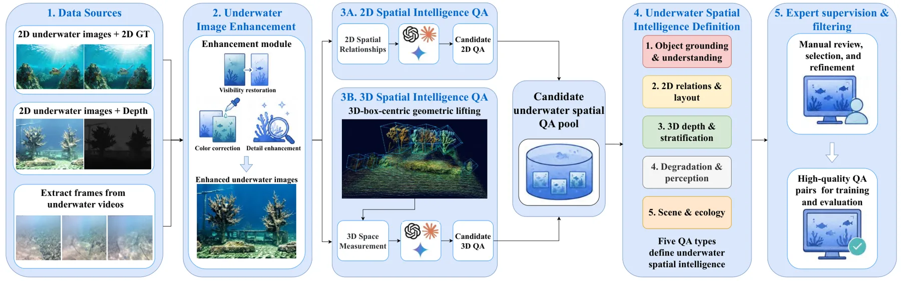
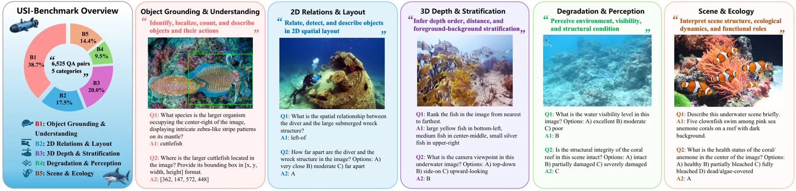
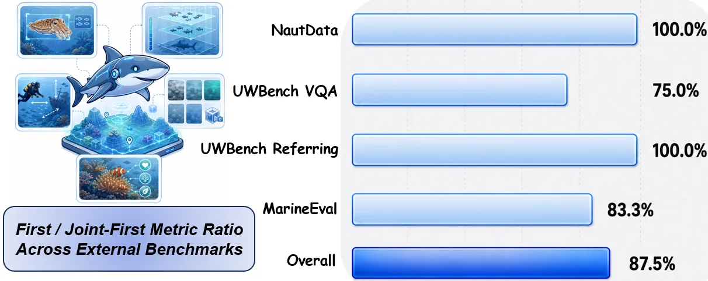

USI-Brain：用水下空间数据引擎把外观与几何接进视觉语言模型
USI-Brain: Enhancing Underwater Spatial Intelligence via Spatial Data-Driven Vision-Language Modeling
这是一篇“数据引擎 + 领域微调”的论文：底座 Qwen3-VL-8B-Instruct，全参数解冻（ViT、merger、语言模型），4.27M 问答训 2 个 epoch，64 张 B200 约 25 小时。UPR 插在视觉编码器之后、多模态投影之前：用 DINOv2 ViT-L/14 提先验，预测散射偏置 β 与吸收恢复增益 G，做 F̃=G⊙(F−β)，再用 sigmoid 门控混回原特征，最后把原始与修正后的 token 交错拼接（256→512 个视觉 token）。消融显示几何辅助监督主要提升深度（+4.8）与排序（+6.1），HUE 主要提升定位与结构感知，UPR 的增益高度集中在场景描述（47.3→65.3）。
QA pairs
average gain
scene description gain
best-or-joint-best metrics
作者、单位与技术谱系 · Research context
作者与单位
研究脉络
- NAUTILUS（Xu et al., arXiv 2510.27481）方法基座关系：NAUTILUS 提供水下多模态数据构造与模型训练，本篇直接使用其聚合的 NautData 作为主要视觉来源，并把评测扩展到空间能力分组。[论文 4.1 节与表 1]
- OpenSpatial（Liu et al., arXiv 2604.07296）技术前作关系：重建辅助的空间监督思路来自 OpenSpatial：先把场景重建出来、拟合物体框，再由几何生成问答；本篇把它搬到水下并加上增强分支。[论文 3.2 节]
- Sea-Thru / UIEB 水下成像与增强技术前作关系：HUE 的双路径设计以水下图像形成模型与增强基准为依据，颜色校正对应吸收，细节恢复对应散射与模糊。[论文 3.1 节]
合作网络
- 哈尔滨工程大学 × 厦门大学Harbin Engineering University → Xiamen University关系：共同署名[arXiv HTML 机构行]
- 本篇 → NAUTILUS / NautDataUSI-Brain 数据引擎 → NAUTILUS（arXiv 2510.27481）关系：技术依赖[论文 4.1 节]
- 计划中的模型与基准发布USI-Brain → github.com/SKY-Zhu-91/USI-Brain关系：项目依赖[论文摘要]
作者与单位取自论文首页脚注；NAUTILUS 的作者重叠与数据依赖有正文与署名支持，属有来源的解读。仓库发布仅为论文声明，未核验实际可用性。
方法本质拆解 · What actually changed
全参数领域微调，加一个可训练整流器
底座是 Qwen3-VL-8B-Instruct，ViT、merger 与语言模型全部解冻，在 4.27M 问答上训练 2 个 epoch，学习率分别为 5e-6 与 5e-5，64 张 B200 约 25 小时。UPR 是额外插入的可训练模块，与主干联合用交叉熵优化，没有蒸馏或辅助损失；USI-Brain 与 USI-Brain+UPR 是两个独立检查点，语料与超参完全相同。
约束来自几何一致性与水下成像模型
数据侧约束是几何一致：问答答案必须与深度反投影、拟合三维框和重建场景一致，且经专家复核视觉证据是否支持答案。模型侧约束来自水下成像的加性散射与乘性吸收假设，UPR 因此把修正写成 F̃=G⊙(F−β)，G 取指数并裁剪到 [−4,4]，避免增益爆炸；门控 M 由原始与修正特征的拼接预测，保证修正可以退化为原特征。
推理用原图，增强只在造数据时用
训练语料来自增强图，但评测时两个变体都直接用原始图像，处理器设置与动态分辨率一致，HUE 不在推理阶段运行，这一点很关键：增益不是“测试时也做了增强”带来的。UPR 版本推理时要多跑一个 DINOv2 先验编码器，并把视觉 token 从 256 增到 512，因此显存与延迟都高于基线，附录 C 给了 A800 与 RTX 3090 的实测。
把几何做成语言监督，把退化做成特征修正
机制分两层：离线把深度与重建几何转成可评分的语言问题，让模型在训练中学会比较远近、判断遮挡与分层；在线用一个轻量整流器把散射与吸收造成的特征偏移拉回，再把原始与修正 token 一起交给语言模型。它没有做的是端到端几何估计、时序一致性建模，也没有证明这种监督能迁移到非水下域。
输入 = 水下图像/视频 + 深度/重建几何 + 实例标注；改变的位置 = 把几何证据转成问答监督并在视觉编码器后插入门控特征整流；约束/动作 = 几何一致性过滤 + 专家复核 + 加性/乘性分解修正；直接效果 = 15 项平均 +7.63 分，深度/排序/场景描述分别提升约 6.7/10.1/18.0。

桥接价值Bridge
桥接价值
它的价值不在水下本身，而在“如何把几何证据写进语言监督”：深度图、重建物体框不是直接喂给模型，而是被转成深度比较、遮挡判断、分层顺序这类可评分问答，这为我们把 LiDAR/双目深度转成训练信号提供了模板。第二个可借鉴点是分工结论：几何监督提升的是深度与排序，图像增强提升的是定位与结构感知，特征整流提升的是整体场景描述——三类干预对应不同能力，不该混在一起报平均分。
方法与模块Method
方法摘要
数据侧：HUE 用两条路径分别做颜色校正与细节恢复，再按像素权重融合；二维分支基于增强图与标注生成身份、属性、位置、关系问题；几何分支把实例掩码内的深度反投影成点集、拟合物体三维框，并借 Atlantis 场景重建生成深度、排序、遮挡、分层与视点问题；候选问答按五类能力组织后由专家审核。模型侧：以 Qwen3-VL-8B-Instruct 为底座全参数微调，UPR 用 DINOv2 先验预测散射偏置与吸收增益修正视觉 token，门控后与原始 token 交错送入语言模型。评测侧：USI-Bench 15 项任务指标，外加 NautData、UWBench、MarineEval 三个外部基准。
可迁移模块
第一是“几何→问答”的转换器：给定深度与实例掩码，自动生成“谁更近/谁在前/谁被遮挡/分几层”这类有唯一答案的问题，可以直接用于我们多传感器数据的自监督构造。第二是能力分组评测：把指标按物体 grounding、二维关系、三维深度、退化感知、场景生态五组切开，避免单一平均分掩盖短板。第三是 UPR 的加性—乘性分解思路：把传感器退化建模成偏置与增益两部分再做门控残差，这个结构足够轻，可以尝试用于低照度/雨雾条件下的视觉前端。

证据Evidence
关键证据与数字
主结果（表 3，15 项指标）：USI-Brain 平均 +5.76，USI-Brain+UPR 平均 +7.63（相对 Qwen3-VL-8B-Instruct）；单点最大提升是 captioning +17.0、structure +15.7、ordering +10.1（100τ 尺度）；grounding 85.4→90.8、detection recall 47.9→55.5。消融：保留几何辅助问答使 depth +4.8、ordering +6.1、viewpoint +3.2、fg/bg +2.2；保留 HUE 使 grounding +2.6、depth +1.9、structure +3.3、scene +2.2；加 UPR 后 scene 47.3→65.3（+18.0），grounding +1.3、depth +1.1、ordering +0.9。外部基准：32 项指标中 28 项最佳或并列最佳，NautData VQA 0.381→0.478、grounding mIoU 53.8→56.4，UWBench 物体指代 Acc@IoU0.7 提升 13.87 点。
边界与下一步Limits & Next Step
边界与风险
作者承认的短板写在结果讨论里：distance（69.6 对 69.9）与 environment（78.3 对 81.2）仍低于底座，前景/背景分离只有 22.7（固定答 A 为 3.43），说明这几类仍是弱项；检测只用 Recall@IoU0.5，没有报告精确率，无法判断误检。数据侧风险是标签质量：USI-Bench 初审只有约 83% 正确、10% 不确定、7% 错误，虽然不确定与错误项都被修订，但说明生成式问答本身有噪声。方法侧风险是 UPR 的 +18.0 集中在场景描述，而该指标由 Gemini 3.1 Pro、GPT-5.5、Claude Opus 4.7 三个评委打分，与其他任务的准确率不同量纲，不能直接相加解读。
下一步实验
可以先做一个跨域小实验：用同样的“几何→问答”模板，把我们某段带 LiDAR/双目深度的序列转成深度比较与遮挡判断问答，微调一个小模型，看它是否只在深度类问题上提升而在语义类问题上持平——这能验证论文的分工结论是否跨域成立。第二步复现 UPR 的对照：同一语料训练“无 UPR”“UPR”两个检查点，只改视觉特征修正模块，观察增益是否同样集中在全局描述而非度量任务。第三步把召回率换成召回+精确率双指标，检查检测提升是否以误检为代价。

